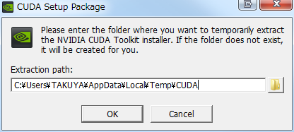
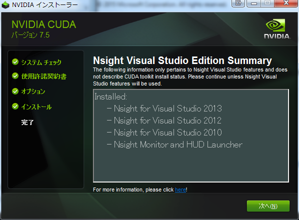
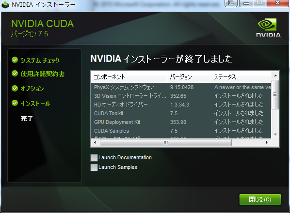

とりあえず環境構築だけ。
Introduction
GPUPUとは、Wiki先生によれば、
GPGPU（General-purpose computing on graphics processing units; GPUによる汎目的計算）とは、GPUの演算資源を画像処理以外の目的に応用する技術のことである。
だそうな。 その一技術として各社からいろんなものが出ています。
- CUDA
- AMD Accelerated Parallel Processing
- OpenCL
CUDA Compute Unified Device Architecture。通称CUDA。 nVidia から発表。 AMD Accelerated Parallel Processing AMD に買収された ATI の ATI Stream の新しい名前。 OpenCL 並列コンピューティングのオープンな仕様。その一部としてGPUPUが使える。
といったところです。 で、今回はCUDAを導入していきます。 個人的に一番勢いがある、と思っているからです。 ATI?なんか死にそう 資料も豊富で、C++/CLI を介して.NETで使うことも可能なので、CUDAを選びました。 いや、ATIもOpenCLもきっとそうなんでしょうけど。 何よりも、私のマシンに入っているのがnVidiaというのもあります。 ちなみに、NVIDIA GeForce GTX 550 Ti です。 CUDA GPUs というページで、GeForce のCUDA対応状況を見れますが、2.1。という数値。 これ、最低は 2.0 ですね。 この数値は性能を表しているわけではないですが、ちょっと悲しい。
Explanation
インストール
ここから開発に必要な CUDA Toolkit をダウンロード。 執筆時点では7.5が最新です。 インストールは下記のような感じ。

{kind=link}
{kind=link}
{kind=link}
{kind=link}
{kind=link}
{kind=link}
{kind=link}
ひたすら、次へで進めていくだけの作業です。 途中でディスプレイドライバーのインストール許可を求められますが、OKを。

{kind=link}
Visual Studio に Nsight Visual Studio Edtion なるものが追加されたようだ。 NVIDIA Nsightによればデバッグ支援ツールのよう。

{kind=link}
インストール終了。
環境チェック
きちんとインストールできたかを確認します。 コマンドプロンプトから下記のコマンドをたたいて結果を確認。 [code lang=”sh”] $ nvcc -V nvcc: NVIDIA (R) Cuda compiler driver Copyright (c) 2005-2015 NVIDIA Corporation Built on Tue_Aug_11_14:49:10_CDT_2015 Cuda compilation tools, release 7.5, V7.5.17 [/code] きちんとインストールされていれば、環境変数が正しく設定されて、バージョン情報が見えます。
Conclusion
今回はインストールまで。